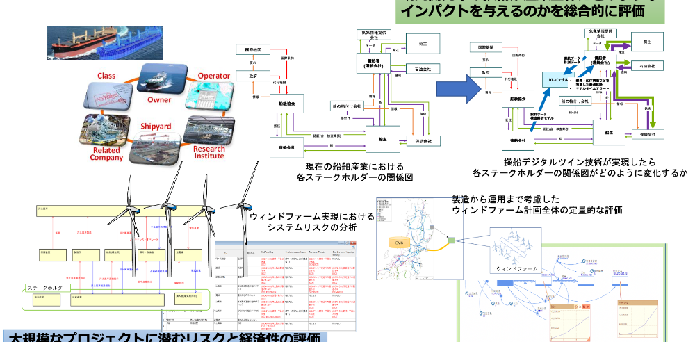
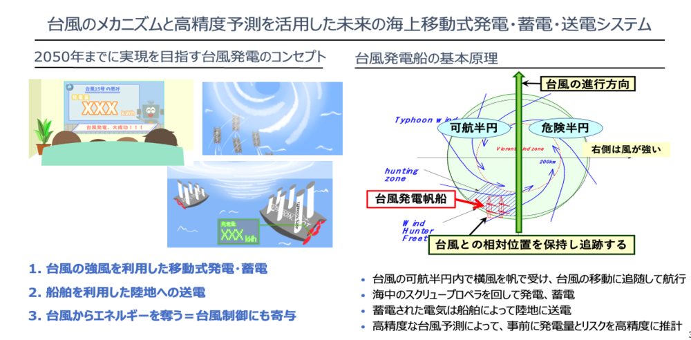

生産工程DX
造船工程などに代表される、人間系による作業の割合が多い工程で、IoT・デジタルツイン・シミュレーション技術を導入することで生産性の向上と効率的な工程管理を実現するための研究を実施しています。

現在・過去の研究テーマ
- 設計情報と建造実績データを活用したデジタルツイン造船工程シミュレーション手法の構築
- グラフデータベースとシミュレーションを利用した管製作工程自動決定システムの開発
- 3Dレーザスキャナを用いた曲がり外板工作精度評価と加工支援システムの開発
- IoTデバイスを用いた作業員の移動計測とチーム作業工程分析
船舶運航IoTデータの高度利活用
近年のセンシング・IoT技術の発達により、運航中の船舶の様々な状態をモニタリングすることが可能になってきました。そのようなデータをうまく解釈して利用するための研究を実施しています。

現在・過去の研究テーマ
- 船舶運航IoTデータを用いた操縦性モデルのパラメータ同定
- 船体構造デジタルツインに関する技術開発
- 舶用機器などで発生するデータの標準化・国際規格化
コンクリート製浮体式洋上風力発電システムの実現
2050年カーボンニュートラル達成に向けて、地域の雇用・産業創出までを視野に入れたコンクリート製浮体式洋上風力発電システムのコンセプト検討を行っています。

現在・過去の研究テーマ
- 生産シミュレーションを用いたコンクリート製浮体生産拠点設計に関する研究
- 生産・輸送・施工モデル連結による洋上風力発電プロジェクトの事業性評価に関する研究
- STAMP/STPA分析による洋上風力発電プロジェクトの安全性評価
台風発電船の実現
「2050年には台風は人類にとっての脅威ではなく、エネルギーをもたらす恵みへと変貌している」世界を実現するために、台風のエネルギーを活用した発電システムの開発を行っています。

現在・過去の研究テーマ
- 台風エネルギーを活用するための発電帆船のConOpsに関する検討